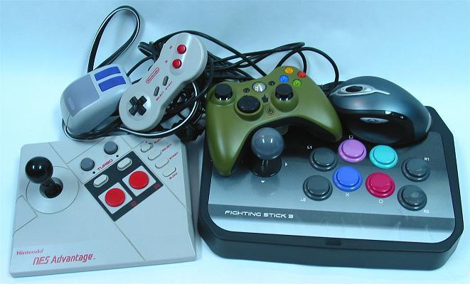

The Joystick Vs The Control Pad
Why use a joystick instead of a control pad?
A controller is basically an interface between the human mind, his or her body, and a machine (a video game machine in this case). For a controller to perform well, it must function intuitively and readily with the mind and body.

Control pads have come to dominate home gaming control devices for many reasons: They are cheap to make, cheap to ship, cheap to store, durable, portable, and can be used in many positions. A cheap control pad tends to work better than a cheap joystick, and a quality joystick can be expensive and compatible with only one system (this can be fixed). Video game console makers and sellers have pushed pads for these reasons, and so they have become the standard. Many regions have poor standard joysticks and the people there do not know what they are missing.
The success of the control pad along with the decline of the arcade have made the joystick an unpopular device. Unfortunately, this has also made the performance of many players mediocre. Under most circumstances, a quality joystick is a better device than a quality control pad.
Anatomically speaking, the wrist and forearm can be moved much more quickly and accurately than individual fingers and thumbs. Try moving your thumb from neutral to the various directions in a small sized area. Then try moving your entire hand in a near fist in the various directions on a bit larger scale. Which is faster, less awkward, and more responsive and accurate?
Image: Arcade joystick by pad controller with standard arcade button resting on it
The joystick is more intuitive with the human mind. To move in a direction, a player just has to push the stick in the desired direction like they are nudging something where they want it to go, and then quickly push it in another direction to move elsewhere. On a control pad, it’s about pushing down a certain arrow or pair of arrows to get the appropriate direction, and pivoting or sliding or regripping the thumb around to change to a new direction, unintuitively pressing down into the controller. In time-sensitive games, the control pad does not perform as well as the joystick.
The same kind of comparisons can be made between the buttons on a held controller and those on a joystick panel. On a held controller, you are again adjusting your thumb to various locations, while on a joystick panel you are able to dedicate multiple fingers to various buttons, much more capable of pressing multiple buttons at the same or near same time. It’s like comparing typing with only your index fingers versus typing with all your fingers.
However, the joystick is not the ultimate controller. The mouse and keyboard have come to dominate most computer gaming simply because they are also the main devices in general computer usage. The mouse is a great device for games involving movements of exact distances like those associated with a cursor or target or 3D viewing. Like the joystick, it has intuitive horizontal movements, but instead of simple directional movement, it works for precise pointing. In fact, when you think about it, the joystick is like a mouse restricted to a small, resetting area.
Image: A mouse set to joystick restrictions
And a good steering wheel controller is going to be best for driving games, and a good fishing controller is going to be best for fishing games, and a good light gun is going to be best for simple gun games, etc. The best controller will best fit the situation given by the game. There are many games that will be best using a joystick, there are many games that will be best using a mouse and keyboard, but there are few games that will be best using a control pad.
Essentially the question, "Will this game be better played on a joystick than on a control pad?", has to be asked. And for most good players the answer will be yes.